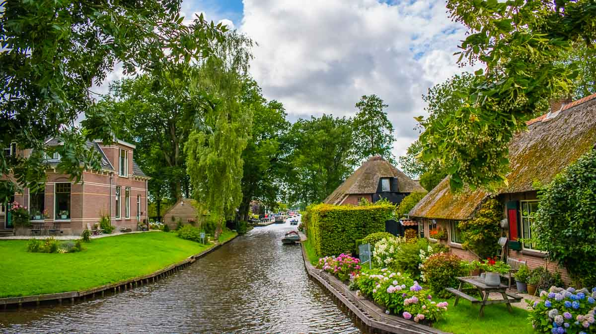
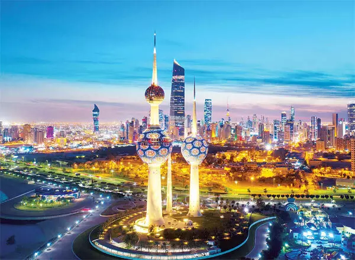
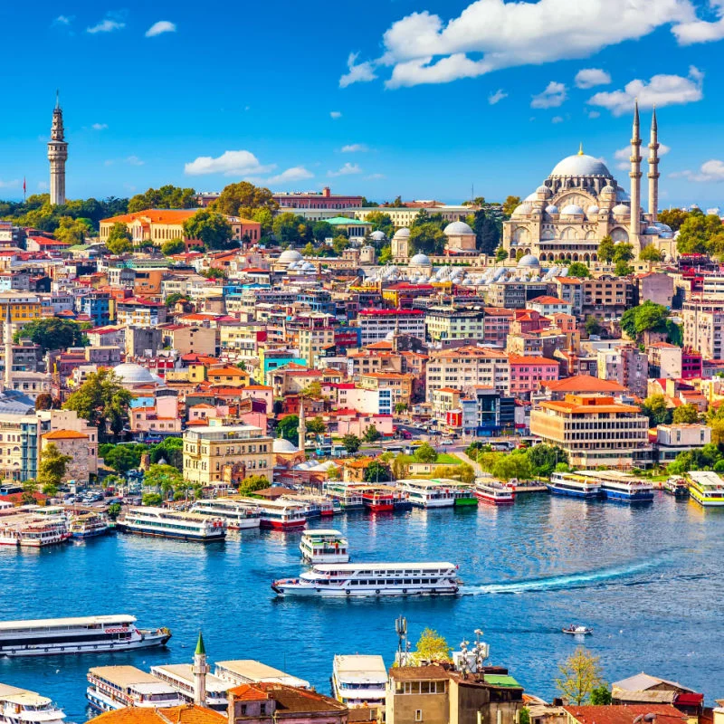

Welcome to Shabreen's travel guide


1.There is a village in the Netherlands with no streets, only canals
venice is not the only town that gets around mainly by boat.
Within Giethoorn Village in the Netherlands, there are no streets, only footpaths and over 6km of canal.
Visitors can either kayak through the scenic neighbourhood or ride a bike on the footpaths.
2.kuwait has some of the cleanest and well kept up city landscapes in all of the gulf.
State of Kuwait is famous for its flat topography and slightly uneven desert.
The land slopes gradually from the sea level in the east at the coast of the Arabian Gulf to the west and the southwest.
The nine islands pertaining to State of Kuwait are Failaka Island, Bubiyan Island, Miskan Island, Warbah Island, Auhah Island, Umm al Maradim Island, Umm an Namil Island, Kubbar Island and Qaruh Island.
3.King Fahd International Airport in Dammam, Saudi Arabia is the world's largest airport by land area.

The airport serves the entire Eastern Province of Saudi Arabia and is one of the four primary international airports in the kingdom.
it's more thanten times the size of the third largest airport, Dallas/Fort Worth International Airport in the United States.
4.Turkey is a country that spans two continents, Asia and Europe, with only 3% of its land in Europe.
Istanbul is the only city in the world that sits on two continents,Europe and Asia on both sides of the Bosporus and Sea of Marmara.
Ankara is the capital of Turkey, not Istanbul
Istanbul has modern and ancient architecture, monuments and landmarks, and cultural sites unlike anywhere else on earth.